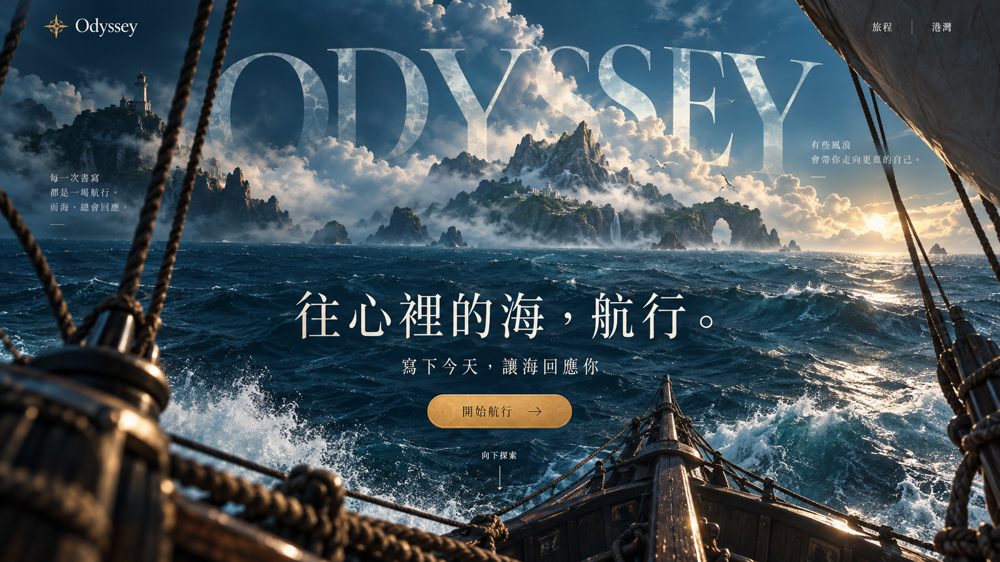
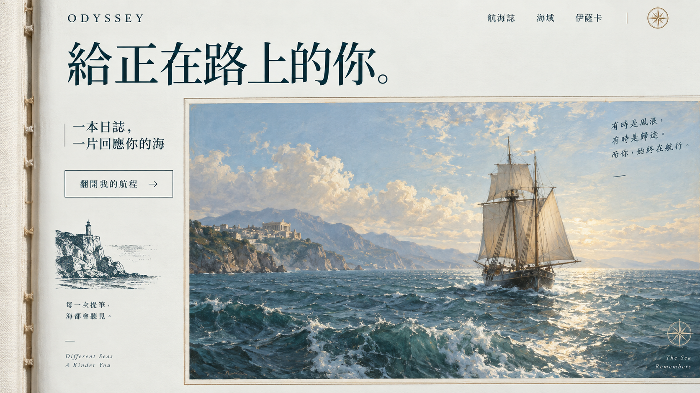

A3 · 航入神話
完整主視覺保留島嶼與船上視角，捲動時推近海面、轉入航海圖；後續是航海日誌、互動海域、同行者與港灣。
Open Odyssey landing page 設計。A3 以完整海景推鏡，再在同一舞台上浮現航海圖；A2 與原版 A、B、C 保留對照。

完整主視覺保留島嶼與船上視角，捲動時推近海面、轉入航海圖；後續是航海日誌、互動海域、同行者與港灣。

明亮航海書冊。跨頁油畫、墨色書寫、紙面留白；讀起來像替自己慢慢翻開一段旅程。

當代海洋海報。鈷藍色塊、大字無襯線與不對稱海景，把「由你掌舵」化成明確的視覺態度。